AI 設定教學
申請你的 OpenAI API key
照中文說明完成申請、保存 key，再回問牌設定。需要時再展開截圖與補充說明。
開啟 OpenAI Platform ↗官方網站會在新分頁開啟，可以對照這份教學操作。
註冊並完成信箱驗證
開啟 OpenAI Platform ↗，輸入 Email，點 Continue（繼續）；也可選擇 Google、Apple 或 Microsoft 登入。
若收到驗證信，把信中的驗證碼填回官方頁面，再點「繼續」。收不到信時先檢查垃圾郵件。
查看截圖：註冊／登入入口
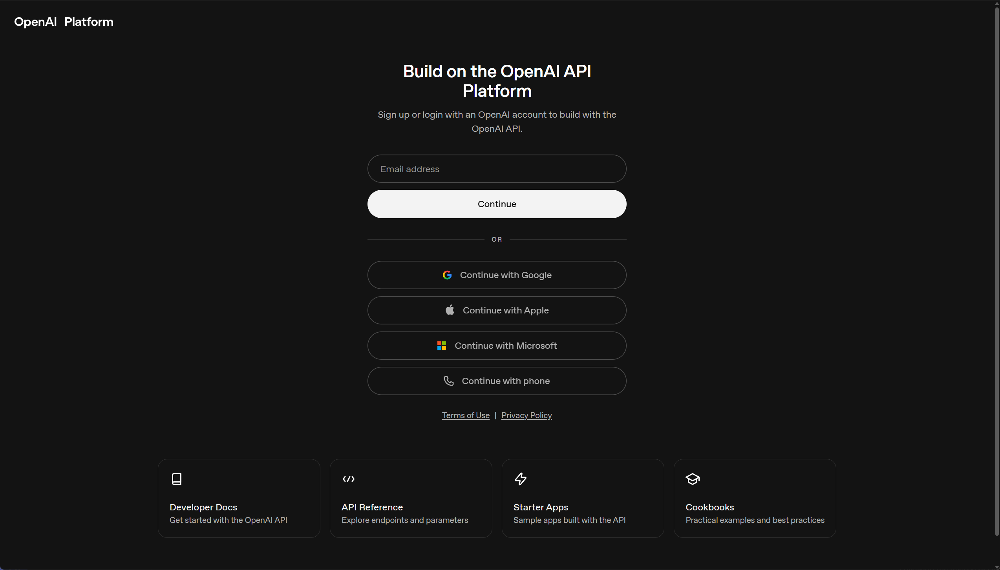
首次開啟、尚未登入時的入口。點圖可另開放大。 查看截圖：輸入信箱驗證碼
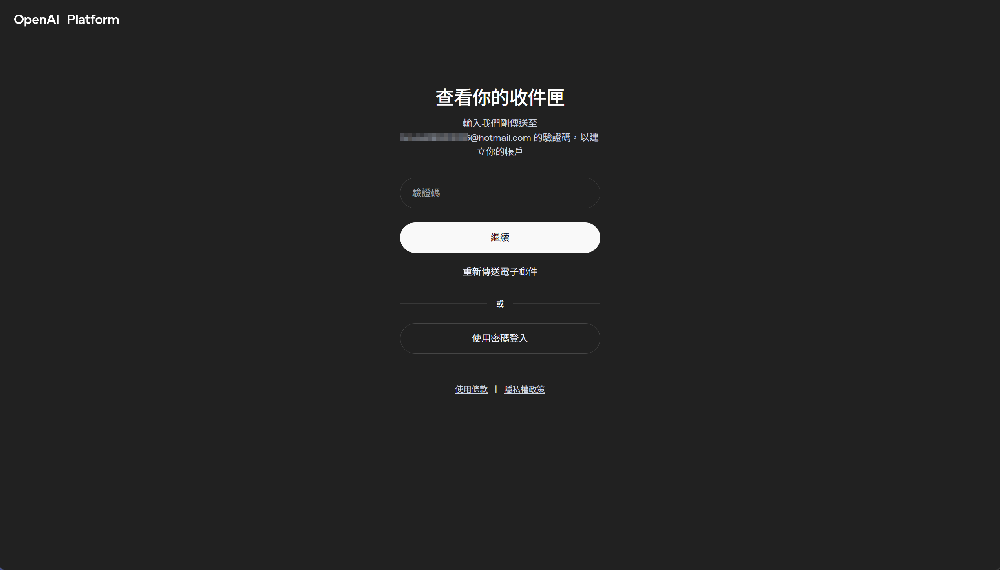
Email 註冊時的驗證步驟；圖片中的 Email 已事先遮蔽。驗證碼只填在官方頁面。 查看截圖：信箱收到的驗證信
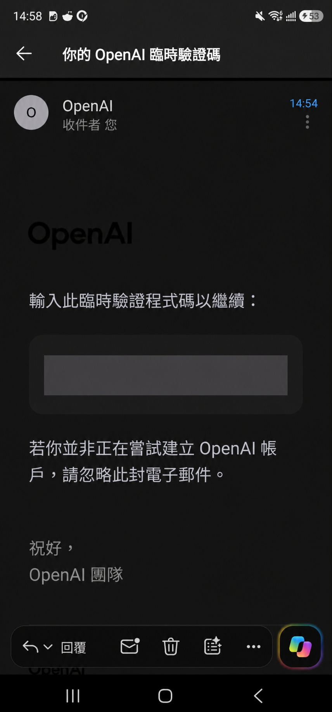
信箱收到的驗證信。只保存遮蔽後的教學圖片；驗證碼不要分享給其他人。 填寫姓名、年齡與專案
填入個人姓名與年齡，點「繼續」。接著填組織名稱 Organization name（個人使用可填 Personal），專案名稱 Project name 可保留 Default project，再點 Continue（繼續）。
查看截圖：姓名與年齡
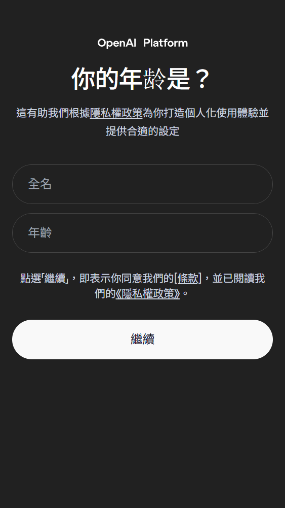
通過 Email 驗證後，填寫個人姓名與年齡，再點「繼續」。 查看截圖：組織與專案名稱
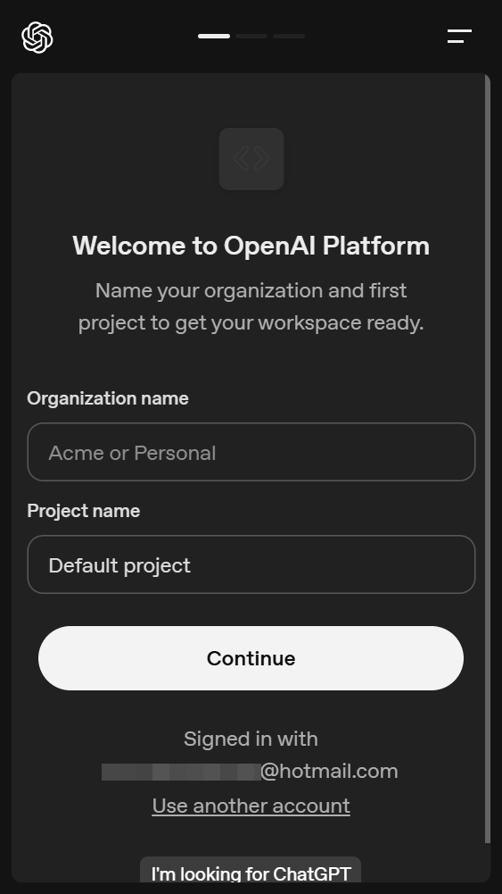
姓名與年齡之後的步驟：設定組織與第一個專案，再點 Continue。信箱已遮蔽。 選擇方案並建立 key
若先選 Free（免費） 完成設定，接著在 API key name（key 名稱） 填「問牌 Prompt」，點 Generate API Key（建立 API key）。
Free 的模型與用量有限制；建立 key 不代表已有可用額度。需要購買額度時，請看下方付款與儲值。
查看截圖：選擇方案
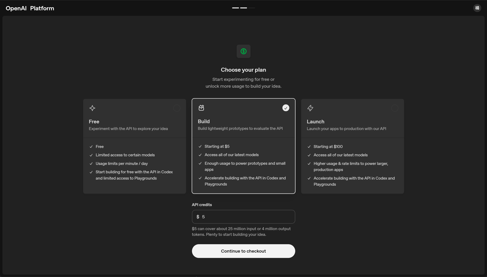
建立組織與專案後，選擇 API 方案。截圖中的 Build 已選取，購買額度為 US$5；這只是畫面範例。 查看截圖：為 key 命名並建立
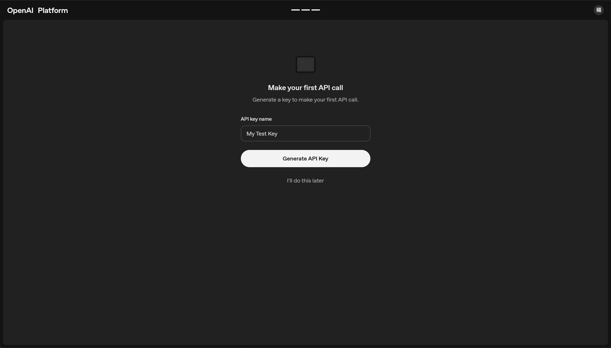
Free 方案的下一步：為 key 命名並建立；也可選擇稍後處理。 立即複製並保存完整 key
點 key 欄位旁的 Copy（複製），把完整 key 保存到安全的位置。下方的程式範例不用執行，也不用複製整段程式。保存後點 Continue（繼續）。
沒保存或找不到完整 key，就必須重建。清單只顯示縮略內容，不能取回完整 key。不要分享自己的 key。
查看截圖：複製 key（手機）
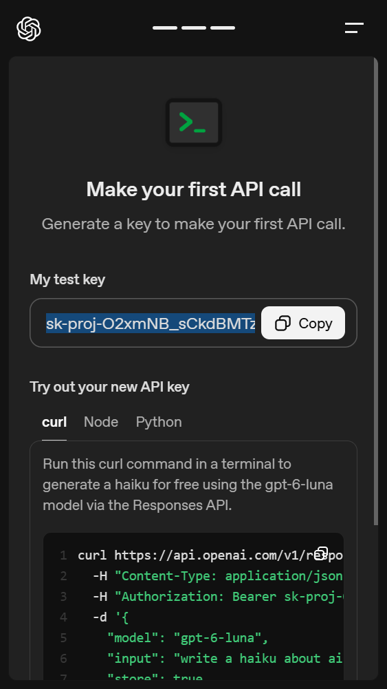
手機版：點 key 欄位右側的 Copy。若要繼續完成初次設定，向下捲動尋找 Continue。 查看截圖：複製 key（電腦）
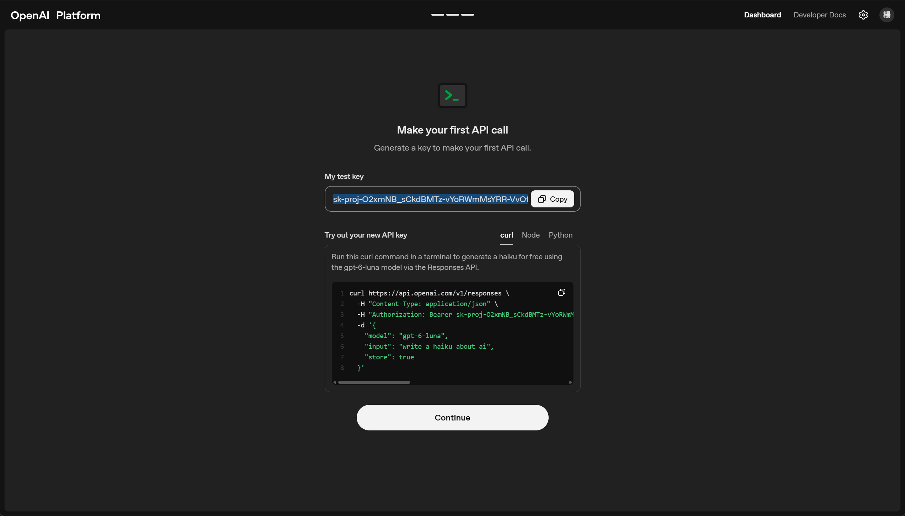
電腦版：先 Copy 並保存 key，再點 Continue。請使用你自己建立的 key。 補充：保存 key 與初次設定畫面
建立完成後，立即複製完整的 secret key，並放在你能安全保管的位置。不要把 key 貼到聊天、公開截圖或分享給別人。
初次設定中點完 Generate API Key 後，會出現下方畫面。請點上方 key 欄位旁的 Copy，複製完整 key，再安全備份。下方 Try out your new API key 是程式呼叫範例；設定問牌只需貼上 key，無須執行範例或複製整段程式。
保存完成後，點 Continue 進入首頁，依下一步確認額度，再回問牌填入並儲存。請使用你自己複製的完整 key。
若忘記保存或懷疑外洩，回到官方 API Keys 頁面撤銷舊 key，再建立新的。官方 key 管理說明 ↗
回問牌填入並儲存
- 切回原本的問牌分頁，開啟右上角「設定」。
- 在「管理 API keys」找到 OpenAI，點「新增 key」或「編輯」。
- 貼上完整 key，選擇「本次使用」或「記住此裝置」。
- 離開輸入欄位後會載入模型，也可以點「更新模型」。
- 在「使用模型」選擇 OpenAI 的模型，再點「儲存」。
問牌將 key 保存在你的瀏覽器，並由瀏覽器直接向 OpenAI 發送請求。公用裝置請選「本次使用」；清除瀏覽器資料或換裝置後，需要重新填入。
回問牌
補充：完整註冊流程、方案與欄位翻譯
第一次前往 OpenAI Platform ↗，尚未登入時會看到下方入口。可輸入 Email 並點 Continue，或使用畫面提供的 Google、Apple、Microsoft 等登入方式；依指示完成註冊或登入。
使用 Email 註冊時，若出現「查看你的收件匣」，請到該信箱收取驗證碼，回到官方頁面輸入後點「繼續」。若沒收到信，先檢查垃圾郵件或使用「重新傳送電子郵件」。
信箱中會收到 OpenAI 的臨時驗證碼信件，如下圖。請將你自己收到的驗證碼填回上一個官方驗證畫面；教學圖片中的驗證碼已遮蔽。
輸入驗證碼並通過驗證後，會接著出現「你的年齡是？」畫面。請依欄位填入個人姓名與年齡，閱讀畫面上的條款與隱私權政策，再點「繼續」。
填完姓名與年齡後，下一步是 Welcome to OpenAI Platform，需要為組織與第一個專案命名。
- Organization name
- 填入方便辨識的組織名稱；個人使用可填 Personal。
- Project name
- 可保留 Default project，或改為「問牌 Prompt」等容易辨識的名稱。
確認下方 Signed in with 顯示的是你要使用的帳戶，再點 Continue 繼續。若登入了其他帳戶，可先點 Use another account 切換。
接著會顯示 Choose your plan，讓你選擇 API 使用方案。下圖是此步驟的畫面，方案與金額請以你的帳戶當下顯示為準。
- Free
- 畫面提供的免費體驗選項，模型與用量有限制；能否用於問牌，仍需確認可用模型與 API 權限。
- Build
- 截圖顯示從 US$5 起，可在下方 API credits 填寫購買額度，再點 Continue to checkout 前往結帳。
- Launch
- 截圖顯示從 US$100 起，提供較高用量與速率限制。請依實際需要選擇。
若選擇付費方案，結帳前先確認購買額度、總額與付款條件；詳細操作可看下方的付款與儲值方式。畫面中的 tokens 數量是估算，實際可用量依模型與輸入／輸出內容而異。
選擇 Free 後，會進入 Make your first API call。在 API key name 填入方便辨識的名稱，例如「問牌 Prompt」，再點 Generate API Key 建立 key。
建立後，請立即複製並妥善保存 key，再回問牌填入，不必再重複建立。建立成功仍需確認 Free 方案的模型、用量與權限是否支援問牌。
若暫時不建立，可點 I'll do this later，之後再從下方介紹的 API Keys 頁面建立。
依官方畫面完成其餘初次設定。進入首頁後，確認目前選取的專案，後面建立的 key 會屬於該專案。
首次首頁：查看建立狀態與剩餘額度
完成初次設定後會進入 Home。下方是選擇 Free 並建立 key 後，第一次進入首頁的電腦版與手機版畫面。
電腦版首頁
查看截圖：首次首頁（電腦）
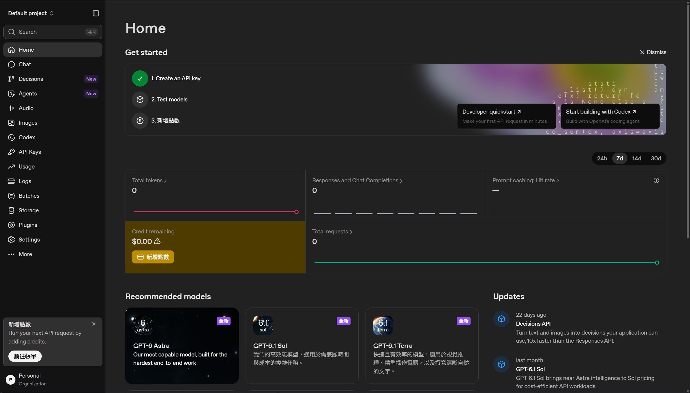
手機版首頁與餘額
查看截圖：首次首頁（手機）
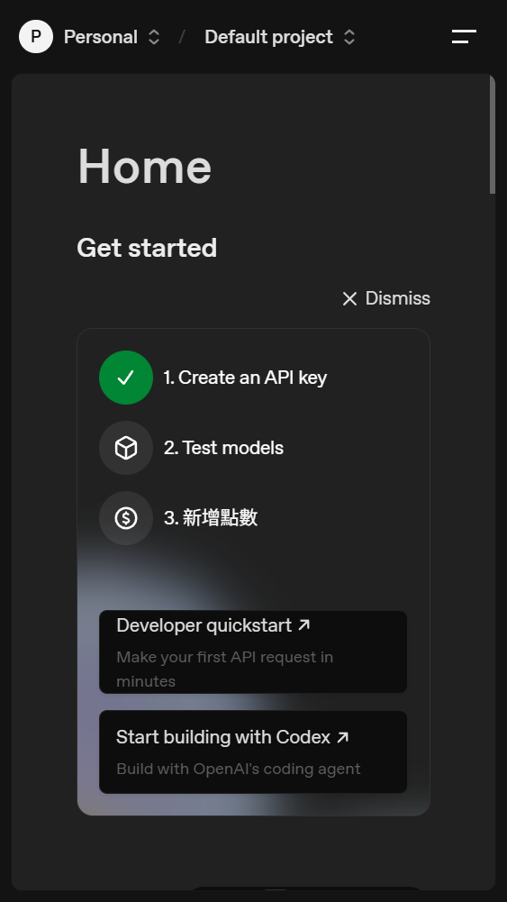
手機版可向下捲動查看 Credit remaining。這個新帳戶範例顯示 US$0.00，表示此處的可用餘額為零；建立 key 不會自動完成儲值。實際可用功能仍依帳戶的免費方案與額度限制為準。
查看截圖：查看餘額（手機）
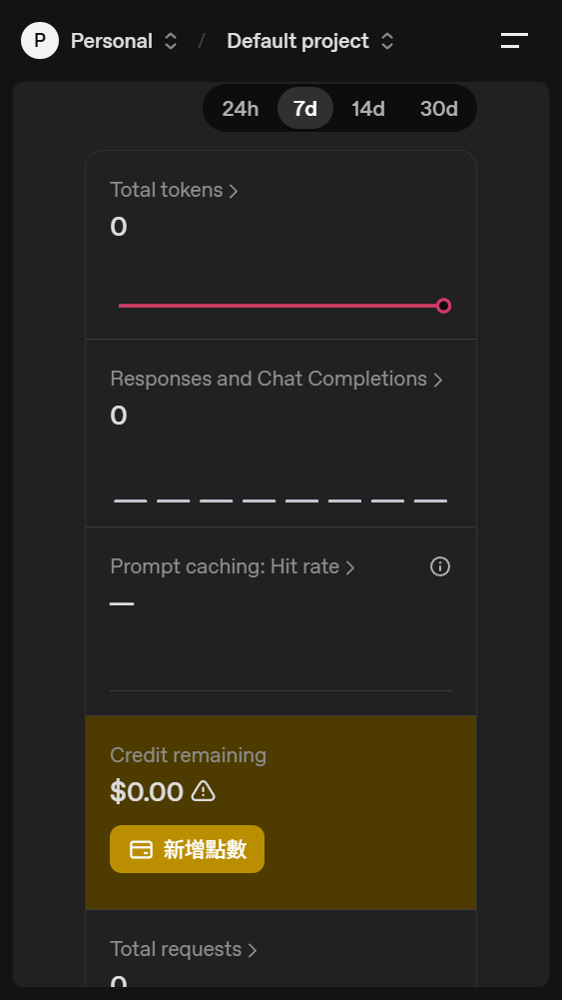
需要購買額度時，點「新增點數」或畫面中的「前往帳單」，再依付款與儲值方式操作。Test models 與開發者快速入門可依需要使用；回問牌設定只需保存好的 key。
已有 key：查看、撤銷或重新建立
若已在初次設定中建立並保存 key，可直接回問牌填入。以下適用於選擇稍後建立，或之後需要新增／管理 key 的情況。
電腦：點左側選單的 API Keys。
手機：點右上角的選單圖示「☰」，在 Dashboard 下找到 API Keys。
也可以直接開啟 官方 API Keys 頁面 ↗。
若已在初次設定中建立 key，進入清單就能看到它。下圖的 1 result 與 My Test Key，表示此範例已經有一把 key。只有在建立當下已複製並保存完整 key，才可以直接沿用，不必重建。
電腦版：確認已建立的 key
查看截圖：已建立的 key（電腦）
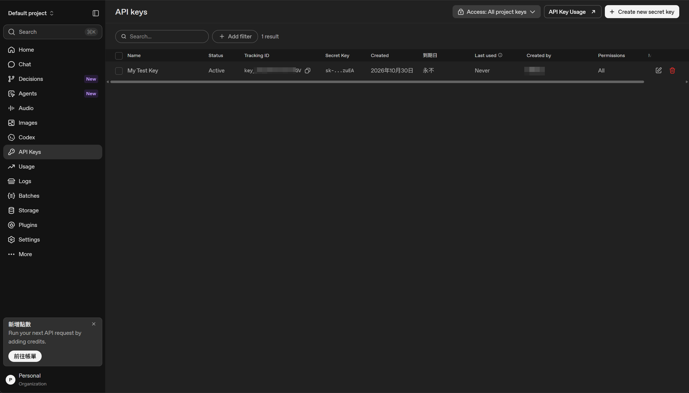
手機版：同樣可看到已建立的 key
查看截圖：已建立的 key（手機）
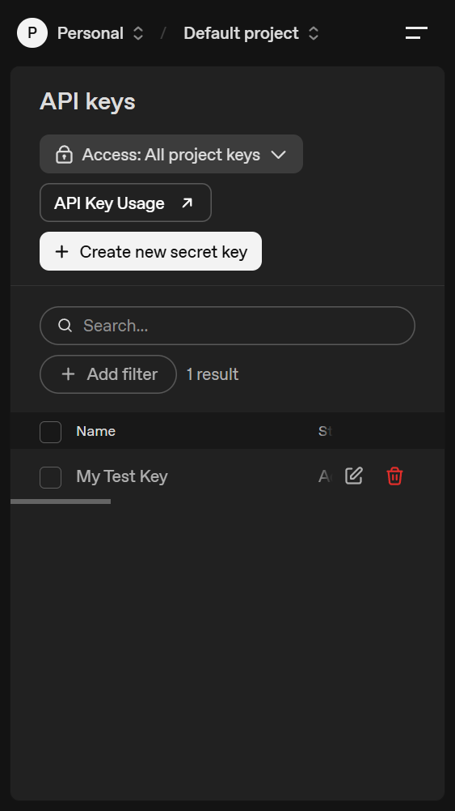
清單中的縮略 Secret Key 與 Tracking ID 都不能取代完整 key。回問牌時請貼上建立當下複製並保存的完整 key；不要將 Tracking ID 旁的複製圖示誤認為複製完整 secret key。
已保存完整 key 時，可直接回問牌填入。如果建立時沒有保存，或已經找不到完整 key，就必須重新建立；清單無法重新顯示完整 secret key。請點 ＋ Create new secret key，依下一步填寫，並在建立後立即複製保存。
忘記內容或不再使用的舊 key，可以在清單該列右側點垃圾桶圖示撤銷。撤銷後，該筆資料仍會留在清單中，狀態改為 Revoked，且無法再編輯或使用。使用那把 key 的應用程式也無法再用它發送請求；若仍有應用程式在使用，先更新為新 key，再撤銷舊 key。
補充：手動新增 key 的設定
在 Create new secret key 視窗中，依照以下方式設定：
- Owned by
- 個人使用選 You。
- Name （選填）
- 填入方便辨識的名稱，例如「問牌 Prompt」。
- Project
- 選擇要使用的專案；若只有 Default project，可以選它。
- 有效期限
- 若有此欄位，選擇適合的到期時間。到期後需建立新 key 並回問牌更新；部分手機畫面可能不顯示此欄。
- Permissions
- All 可用來完成設定，但權限較廣。若熟悉權限設定，可選 Restricted，允許讀取模型清單與呼叫 Chat Completions。Read only 無法產生 AI 回覆。
確認後，點 Create secret key。若按鈕無法點選，先檢查專案、有效期限等欄位是否已依畫面要求完成。
付款與儲值方式
- 在首頁點黃色 Add credits／新增點數，直接進入計費頁。也可從左下角帳戶選單 → Organization settings（組織設定）→ Billing（計費）。
- 查看 Credit remaining（剩餘額度）。初次付款點 Add payment details（新增付款資料），填卡號、有效期與安全碼，再點 Continue（繼續）。
- 在 Payment methods（付款方式） 看到卡片，代表卡片已加入；不代表已完成儲值。
- 回到 Overview（總覽），點 Add to credit balance／Buy credits（購買額度），輸入金額並選擇付款卡片。
- 確認是否開啟 Use auto-reload（自動儲值）；只想手動付款就關閉，再依畫面完成付款確認與銀行驗證。
- 付款後回總覽確認餘額，並在 Billing history（帳單紀錄） 核對付款；若尚未更新，先查交易狀態，避免重複付款。
最低購買 US$5，預設金額 US$10；購買的額度一年後到期。初次設定自動儲值預設開啟，付款前請確認。官方規定 ↗
查看截圖：黃色新增點數入口
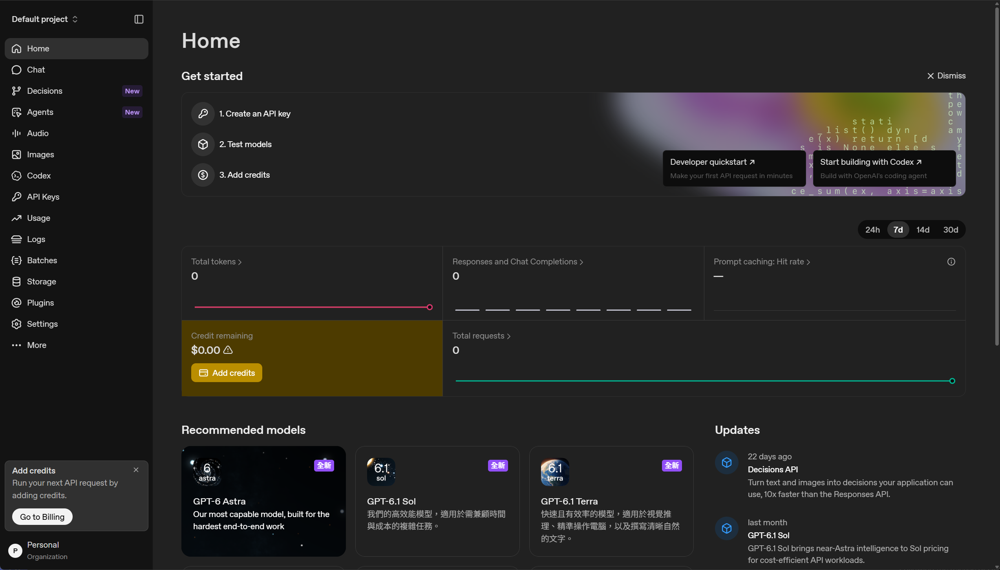
查看截圖：組織設定入口
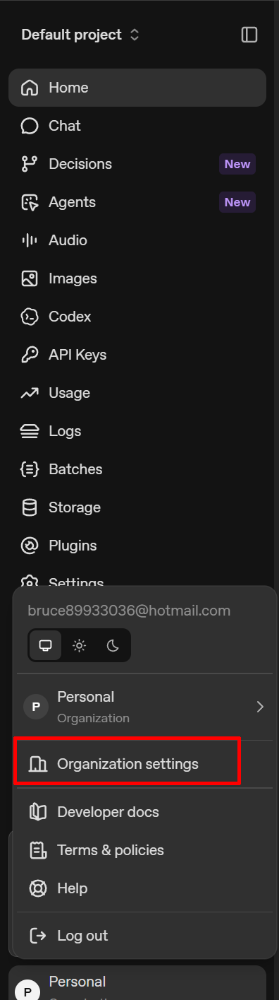
查看截圖：Billing 計費總覽
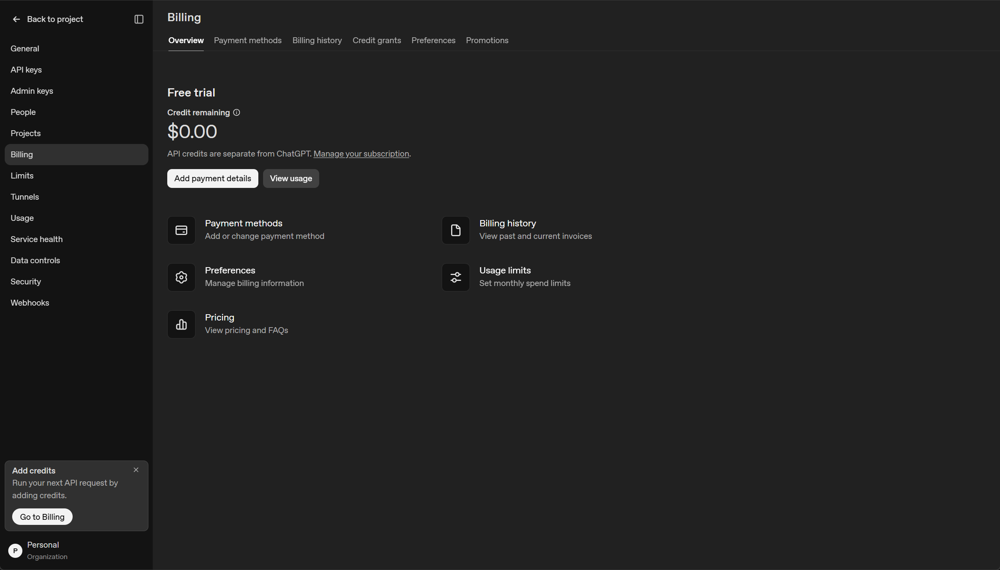
查看截圖：新增付款卡片
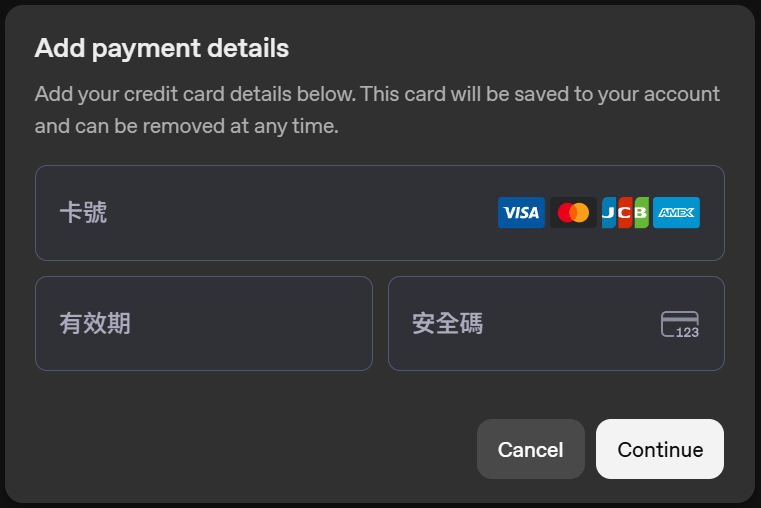
查看截圖：確認卡片已加入
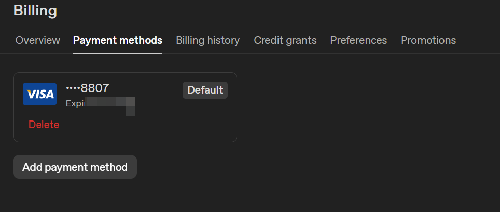
查看截圖：購買點數
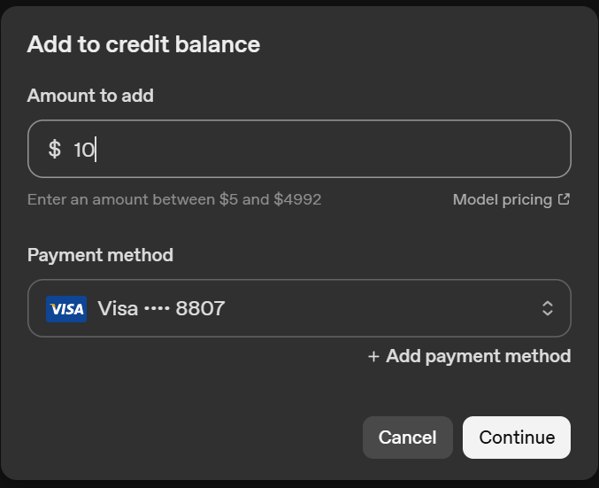
完整付款說明與英文介面翻譯
API 的付款與 ChatGPT 訂閱分開管理。先查看 API 組織的可用額度，再決定是否儲值；有訂閱優惠額度時，也要先確認已領取到正確的組織。
1. 開啟官方計費頁面
方式一：從首頁點黃色「新增點數」。在 Home 找到 Credit remaining 餘額區塊，點下方黃色「新增點數」按鈕，會直接進入下方的 Billing 畫面，不必再操作左側功能選單。手機版可向下捲動找到同一個餘額區塊。
方式二：從左下角帳戶選單進入組織設定。點左側欄底部的帳戶／組織區塊，展開選單後，點圖中紅框標示的 Organization settings，再在組織設定中找到 Billing。
也可直接開啟官方 Billing 計費頁面 ↗。若有多個組織，先確認目前選取的組織是 key 所屬的組織；看不到付款設定時，請確認自己有管理計費的權限。
兩條路徑最後都會到這個 Billing 畫面。從 Organization settings 進入時，請點左側的 Billing；若剛才已點黃色「新增點數」，可直接從這裡繼續。
看懂 Billing 畫面的重點
在這個畫面，可以看到目前方案為 Free trial（免費試用），以及 Credit remaining（剩餘額度）。圖中的剩餘額度為 US$0.00，也就是目前顯示的 API 餘額為零。
Billing 是「計費／帳務」。目前選取的 Overview 是「總覽」，可查看目前方案與剩餘額度，並進入付款與帳務設定。
- Free trial
- 「免費試用」，是此範例帳戶目前顯示的方案。是否還有可用額度，請看下方的 Credit remaining。
- Credit remaining
- 「剩餘額度」。圖中的 US$0.00 表示此處顯示的 API 餘額為零。
- API credits are separate from ChatGPT.
- 「API 額度與 ChatGPT 分開管理」。儲值 API 額度與購買 ChatGPT 訂閱是不同操作。
- Manage your subscription
- 「管理你的訂閱」。這個連結是管理 ChatGPT 訂閱；本次要設定 API 付款資料，請使用下方的 Add payment details。
- Add payment details
- 「新增付款資料」。第一次設定付款與儲值，請先點這個按鈕，再依接下來的畫面填寫。
- View usage
- 「查看用量」。用來查看 API 使用情形與消耗，並非儲值按鈕。
上方分頁與下方功能入口，可以依需要查看：
- Payment methods
- 「付款方式」。下方的 Add or change payment method 是「新增或變更付款方式」，例如管理付款卡片。
- Billing history
- 「帳單紀錄」。View past and current invoices 是「查看過去與目前的帳單」。
- Credit grants
- 「獲授額度」。查看帳戶獲得的額度資訊；是否有可用額度，以帳戶實際內容為準。
- Preferences
- 「偏好設定」。Manage billing information 是「管理帳務資料」。
- Promotions
- 「優惠活動」。查看平台提供的優惠相關資訊；是否適用，以帳戶顯示為準。
- Usage limits
- 「用量限制」。Set monthly spend limits 是「設定每月支出上限」。提醒與硬上限的差別，請看下方「設定費用提醒與用量上限」。
- Pricing
- 「價格」。View pricing and FAQs 是「查看價格與常見問題」，可用來了解模型費率。
接下來請點 Add payment details（新增付款資料），繼續設定付款方式。
2. 新增付款方式並手動儲值
點 Add payment details 後，會出現下方的「新增付款資料」視窗。上方英文說明的意思是：請填入信用卡資料；這張卡會儲存在你的帳戶，之後可以移除。
- 卡號
- 填入信用卡卡號。截圖右側顯示 Visa、Mastercard、JCB 與 American Express 標誌；實際是否接受該卡，仍以官方付款結果為準。
- 有效期
- 填入卡片的到期月份與年份，依欄位顯示的格式輸入。
- 安全碼
- 填入卡片上的 CVC／CVV 安全碼，通常為 3 或 4 碼；不是提款密碼，也不是銀行簡訊驗證碼。
- Cancel
- 「取消」，關閉這個視窗。
- Continue
- 「繼續」。確認資料後點此按鈕，依接下來的官方畫面完成後續步驟。
請只在 OpenAI 官方付款視窗填入卡片資料。這一步是新增付款資料，還需依後續畫面確認儲值金額與付款結果，不能只因填完卡片就認定額度已入帳。
確認付款方式已新增
依畫面指示完成後，開啟 Billing → Payment methods（付款方式）。如果設定成功，這裡應該會看到剛新增的卡片，如下圖。
- Payment methods
- 「付款方式」。可在此確認帳戶目前保存的卡片。
- 卡片標誌與末四碼
- 用來辨識是哪張卡片，請核對是否為你剛新增的卡片。
- Default
- 「預設付款方式」，表示這張卡目前被設為預設卡片。
- Delete
- 「刪除」，用來移除這個付款方式。
- Add payment method
- 「新增付款方式」，需要加入其他卡片時使用。
看得到卡片，代表付款方式已設定；是否已儲值成功，要另外確認剩餘額度與交易紀錄。
購買點數：Add to credit balance
開啟購買額度入口後，會出現 Add to credit balance（增加可用額度）視窗。先輸入購買金額並確認付款卡片，再點 Continue 繼續。
- Amount to add
- 「要增加的金額」，以美元計價。圖中的 10 代表購買 US$10 的 API 額度。
- Enter an amount between $5 and $4992
- 「請輸入 US$5 至 US$4,992 之間的金額」。這是截圖中該帳戶當下可輸入的範圍；上限會受帳戶的信任等級與可持有額度限制影響，請以自己的畫面為準。
- Model pricing
- 「模型價格」，可查看不同模型的 API 費率。
- Payment method
- 「付款方式」，選擇本次要扣款的卡片。
- Add payment method
- 「新增付款方式」，需要換用尚未加入的卡片時使用。
- Cancel／Continue
- 「取消／繼續」。確認購買金額與卡片後，點 Continue，依後續畫面完成付款確認。
官方規定最低購買 US$5，預設購買金額為 US$10。預設值不等於最低金額；你可以依畫面允許的範圍調整。官方也說明，購買的額度會在一年後到期。官方預付 API 計費說明 ↗（查核日期：2026-10-30）
後續付款與入帳確認
- 回到 Billing → Overview（總覽），先查看 Credit remaining（剩餘額度）。如果剛才的流程已完成儲值，請先核對金額與交易紀錄，避免再次購買。
- 需要購買額度時，點畫面提供的 Add to credit balance／Add credits（新增額度／點數）或相應購買入口；按鈕名稱以實際畫面為準。
- 輸入要購買的 API credits 金額，確認付款卡片與帳單資料。第一次可先從畫面允許的小額開始，並閱讀計價幣別、總額、額度有效期限與退款條件。
- 確認是否啟用自動儲值，再依官方畫面提交付款；如銀行要求驗證，請在銀行提供的驗證流程完成。
- 付款完成後，回到 Overview 確認剩餘額度，並在 Billing history 查看交易／帳單紀錄。若餘額尚未更新，稍候重新整理並先查交易狀態，避免重複付款。
- 確認可用額度後，回問牌填入完整 key、選擇模型並儲存。新增卡片或儲值，都不會自動替問牌完成設定。
購買上限、可用付款方式與其他條件請以帳戶當下的官方結帳畫面為準。問牌不代收款，也不需要你的卡號、銀行驗證碼或付款截圖。
3. 決定是否啟用自動儲值
Auto recharge／Use auto-reload 是「自動儲值」。官方說明初次設定時預設開啟 Use auto-reload；只想手動購買額度，請在確認付款前關閉。若保留開啟，請檢查觸發餘額門檻、要補回的目標餘額與每月自動儲值上限。
自動儲值上限與 API 使用費用上限是不同設定。前者控制自動購買額度，後者控制 API 花費。請另外檢查下一項的用量限制。
4. 設定費用提醒與用量上限
在組織 Limits ↗ 或專案的 Limits 中設定每月預算。Spend alert 只會提醒；若要達到設定額度後阻擋請求，需確認已啟用 Enforce a hard limit。限制生效可能有延遲，實際記錄費用仍可能略高於設定值。官方費用上限說明 ↗
使用後可到官方 Usage 用量頁 ↗核對消耗；費率請查看官方 API 價格 ↗。儲值成功不會自動替問牌選模型，仍需回設定頁選擇模型並儲存。
補充：API 額度與 ChatGPT 訂閱
建立 key 不代表已取得可用額度。請在 OpenAI Platform 確認餘額與計費設定；API 使用量會依模型計費。符合資格的 ChatGPT 訂閱可能有可領取的 API credits，是否適用請以你的帳戶為準。查看官方額度說明 ↗
如果暫時不想設定 key，仍可用問牌抽牌、複製 Prompt，再貼到你使用的 AI 聊天工具。需要付費使用時，可先看下方的付款與儲值方式。
安全保護指南
- 不要把完整 key、驗證碼或卡片資料分享給他人。
- 為 key 設定有效期限與合適權限，定期查看用量與費用；懷疑外洩時，立即到官方 API Keys 撤銷。
- 問牌刪除 key 只會移除本機保存；要停用 key，必須到 OpenAI 撤銷。撤銷後清單仍會保留，狀態為 Revoked，無法再編輯或使用。
- 官方建議由後端保管 key；問牌目前由瀏覽器保存並直接呼叫 API。共用裝置請選「本次使用」，用完後刪除並關閉分頁。
完整安全指南與瀏覽器保存方式
閱讀 OpenAI 官方說明：API 金鑰安全的最佳實踐（繁體中文）↗
保護帳戶與登入驗證
- 從本頁的官方連結進入，輸入密碼或付款前檢查網址。不要透過陌生訊息中的連結登入或儲值。
- 在帳戶安全性設定檢查並啟用多因素驗證（MFA）。若使用 Google、Apple 或 Microsoft 登入，也請保護對應的登入帳戶。驗證碼與備用碼不要交給其他人。
把 API key 當成密碼保管
- 為問牌建立專用 key，使用容易辨識的名稱，設定合適的有效期限；熟悉權限設定時，使用 Restricted 限制為需要的功能。團隊成員應各自使用自己的 key，不共用同一把。
- 用密碼管理工具等安全方式備份。不要放在公開文件、程式碼、聊天或截圖中；分享操作畫面前遮住完整 key、Email 與不想公開的使用數字。
- 到期前建立新 key，回問牌更新並確認可使用，再到官方頁面撤銷舊 key。可參考官方 API 金鑰安全指南 ↗。
了解問牌的瀏覽器保存方式
「本次使用」將 key 保存在本分頁的 sessionStorage；「記住此裝置」將 key 保存在 localStorage。這些是瀏覽器儲存空間，問牌沒有另外加密保存 key。能存取該瀏覽器資料的人、惡意擴充功能或裝置上的惡意程式，仍可能取得 key。
優先使用自己的裝置；共用裝置請選「本次使用」，用完後在問牌設定刪除 key 並關閉分頁。問牌的 AI 請求由瀏覽器直接送往供應商，問題與背景內容也會一起傳送，填寫前請移除不必要的個人資料。
懷疑 key 外洩或發現不明費用時
- 立即到官方 API Keys 頁面 ↗撤銷可疑 key。
- 檢查 Usage、Billing、自動儲值與費用上限；如有不明交易，從官方平台的支援入口提出查詢。
- 檢查帳戶登入安全與裝置，排除外洩原因，再建立新 key 並回問牌更新。
在問牌刪除 key 或清除瀏覽器資料，只會移除本機保存。要讓舊 key 無法再被使用，必須到 OpenAI 官方頁面撤銷。
設定時卡住了？
有 key，為什麼仍提示額度不足？
Key 用來辨識帳戶與專案；可用額度需要另外確認。到 OpenAI Platform 的計費設定查看餘額、付款與額度狀態，再回問牌重試。
模型清單空白或提示權限錯誤？
確認 key 完整、尚未到期或被撤銷，而且有權限讀取模型清單與產生回覆。修改後回問牌點「更新模型」。
手機畫面和教學不一樣？
OpenAI 介面可能調整。先找右上角選單，再找「API Keys」與「Create new secret key」；也可使用上方提供的官方 API Keys 直達連結。
教學更新：2026-10-30。介面欄位參考使用者提供的電腦與手機截圖，實際流程以官方頁面為準。建立 key 的基本流程可參考 OpenAI 官方快速入門 ↗。